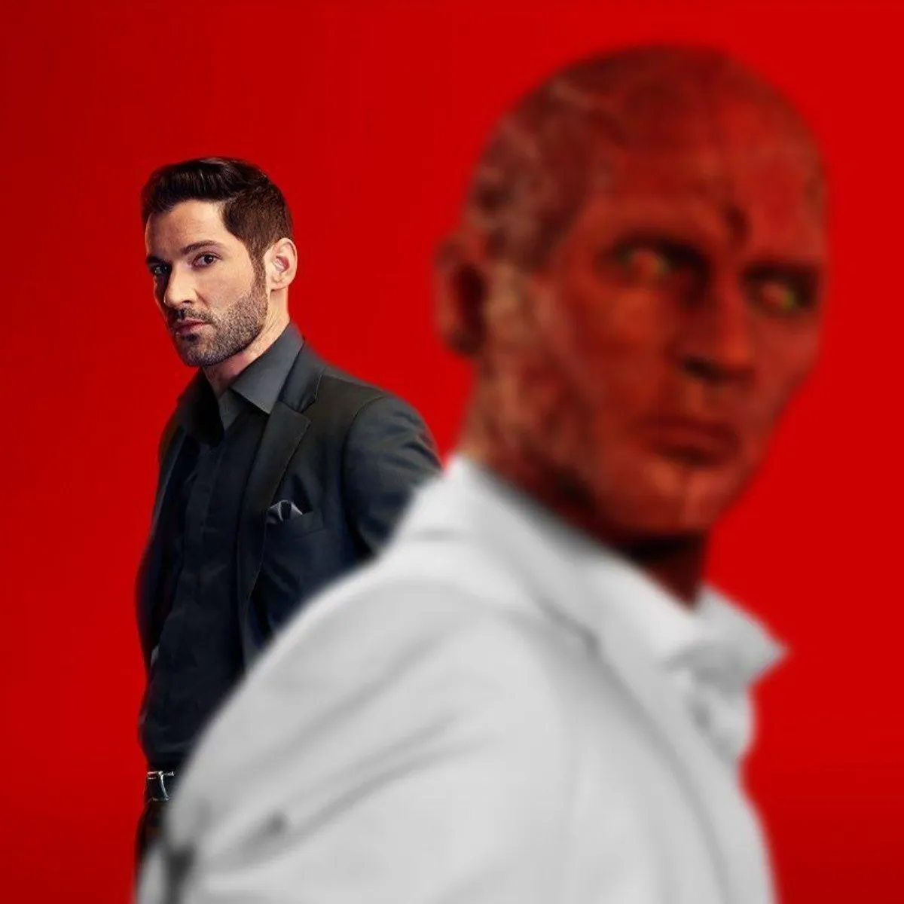
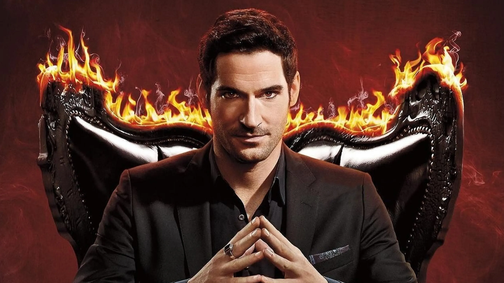
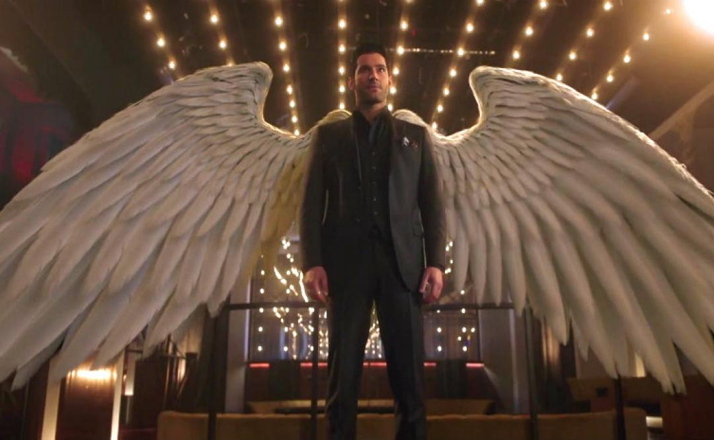
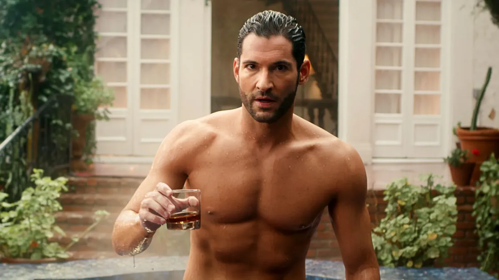

Lucifer es una serie de televisión estadounidense desarrollada por Tom Kapinos que se estrenó en Estados Unidos en Fox el 25 de enero de 2016.Se basa en el personaje de DC Comics creado por Neil Gaiman, Sam Kieth y Mike Dringenberg tomado de la serie de cómics The Sandman, quien más tarde se convirtió en el protagonista de una serie de cómics derivada, ambos publicados por la imprenta Vertigo de DC Comics. La serie es producida por Jerry Bruckheimer Television, DC Entertainment y Warner Bros. Television.



